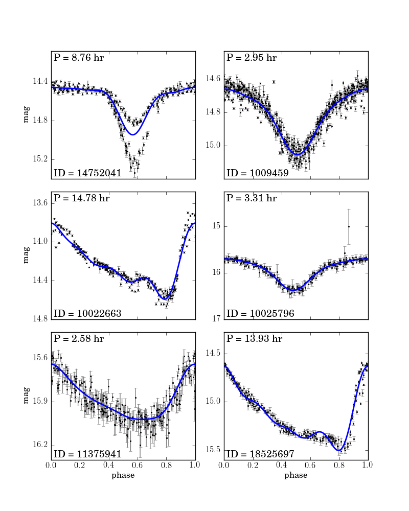

Phased LINEAR Light Curve¶
Figure 10.17
Phased light curves for six of the periodic objects from the LINEAR data set. The lines show the best fit to the phased light curve using the first four terms of the Fourier expansion (eq. 10.68), with the omega_0 selected using the Lomb-Scargle periodogram.
{kind=link}
@pickle_results: using precomputed results from 'LINEAR_LS.pkl'
- omega_0 = 17.21695506
- omega_0 = 51.10600808
- omega_0 = 10.20062676
- omega_0 = 45.55493503
- omega_0 = 58.44512277
- omega_0 = 10.82722772
# Author: Jake VanderPlas
# License: BSD
# The figure produced by this code is published in the textbook
# "Statistics, Data Mining, and Machine Learning in Astronomy" (2013)
# For more information, see http://astroML.github.com
# To report a bug or issue, use the following forum:
# https://groups.google.com/forum/#!forum/astroml-general
import numpy as np
from matplotlib import pyplot as plt
from astroML.decorators import pickle_results
from astroML.time_series import search_frequencies, lomb_scargle, MultiTermFit
from astroML.datasets import fetch_LINEAR_sample
#----------------------------------------------------------------------
# This function adjusts matplotlib settings for a uniform feel in the textbook.
# Note that with usetex=True, fonts are rendered with LaTeX. This may
# result in an error if LaTeX is not installed on your system. In that case,
# you can set usetex to False.
from astroML.plotting import setup_text_plots
setup_text_plots(fontsize=8, usetex=True)
#------------------------------------------------------------
# Load the dataset
data = fetch_LINEAR_sample()
ids = [14752041, 1009459, 10022663, 10025796, 11375941, 18525697]
#------------------------------------------------------------
# Compute the best frequencies
@pickle_results('LINEAR_LS.pkl')
def compute_best_frequencies(ids, n_eval=10000, n_retry=5, generalized=True):
results = {}
for i in ids:
t, y, dy = data[i].T
print " - computing power for %i (%i points)" % (i, len(t))
kwargs = dict(generalized=generalized)
omega, power = search_frequencies(t, y, dy, n_eval=n_eval,
n_retry=n_retry,
LS_kwargs=kwargs)
results[i] = [omega, power]
return results
results = compute_best_frequencies(ids, n_eval=10000, n_retry=5)
#------------------------------------------------------------
# Plot the phased light-curves
fig = plt.figure(figsize=(5, 6.5))
fig.subplots_adjust(hspace=0.1, bottom=0.06, top=0.94, left=0.12, right=0.94)
for i in range(6):
# get the data and best-fit angular frequency
t, y, dy = data[ids[i]].T
omega, power = results[ids[i]]
omega_best = omega[np.argmax(power)]
print " - omega_0 = %.10g" % omega_best
# do a fit to the first 4 Fourier components
mtf = MultiTermFit(omega_best, 4)
mtf.fit(t, y, dy)
phase_fit, y_fit, phased_t = mtf.predict(1000, return_phased_times=True)
# plot the phased data and best-fit curves
ax = fig.add_subplot(321 + i)
ax.errorbar(phased_t, y, dy, fmt='.k', ecolor='gray',
lw=1, ms=4, capsize=1.5)
ax.plot(phase_fit, y_fit, '-b', lw=2)
ax.set_xlim(0, 1)
ax.set_ylim(plt.ylim()[::-1])
ax.yaxis.set_major_locator(plt.MaxNLocator(4))
ax.text(0.03, 0.04, "ID = %i" % ids[i], ha='left', va='bottom',
transform=ax.transAxes)
ax.text(0.03, 0.96, "P = %.2f hr" % (2 * np.pi / omega_best * 24.),
ha='left', va='top',
transform=ax.transAxes)
ylim = ax.get_ylim()
ax.set_ylim(ylim[0], ylim[0] + 1.1 * (ylim[1] - ylim[0]))
if i < 4:
ax.xaxis.set_major_formatter(plt.NullFormatter())
if i % 2 == 0:
ax.set_ylabel('mag')
if i in (4, 5):
ax.set_xlabel('phase')
plt.show()